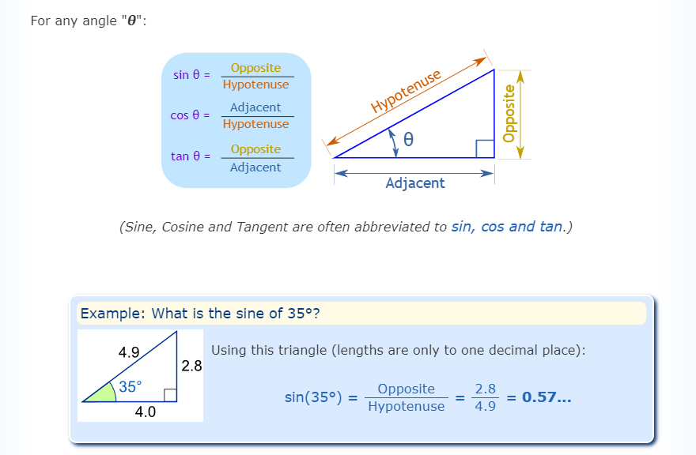

Trigonometry is one of the important branches in the history of mathematics that deals with the study of the relationship between the sides and angles of a right-angled triangle. This concept is given by the Greek mathematician Hipparchus. In this article, we are going to learn the basics of trigonometry such as trigonometry functions, ratios, trigonometry table, formulas and many solved examples
The three basic functions in trigonometry are sine, cosine and tangent. Based on these three functions the other three functions that are cotangent, secant and cosecant are derived. All the trigonometrical concepts are based on these functions. Hence, to understand trigonometry further we need to learn these functions and their respective formulas at first.
If θ is the angle in a right-angled triangle, then;
Sin θ = Perpendicular/Hypotenuse Cos θ = Base/Hypotenuse Tan θ = Perpendicular/Base 